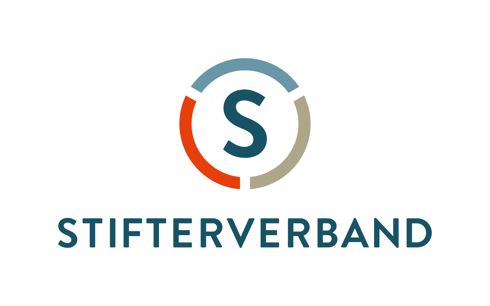
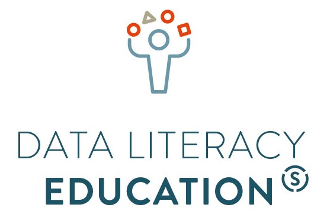

datenkompetent
Beispielhafte Lehrformate und -strategien für die Data Literacy Education an deutschen Hochschulen

Henning Koch | Sam Sievers (Hrsg.)
Willkommen
Die Mitglieder der Working Group: Data Literacy möchten ihre Erfahrungen mit der Vermittlung von Data Literacy an deutschen Hochschulen teilen. Auf dieser Seite sind deshalb verschiedene Lehrformate und -strategien gesammelt, die sich in der Data Literacy Education bewährt haben.
Diese Website richtet sich an Hochschulen und ihre Lehrenden sowie an all jene aus dem Bereich der Hochschul- und Curriculumsentwicklung, die sich mit Data Literacy Education auseinandersetzen und die nach Inspirationen und konkreten Ideen für mehr Datenkompetenzen in der Hochschullehre suchen.
Im Stil eines Blogs findet sich weiter unten eine Auflistung der verschiedenen Formate und Strategien. Die Schlagworte/Kategorien auf der rechten Seite dienen einem Überblick über die Artikel. Es ist auch möglich, alle Artikel nach Begriffen zu durchsuchen. Alle Inhalte stehen unter einer CC BY SA 4.0 Lizenz und haben über Zenodo eine DOI.

Einleitendes
Keine Treffer
Lehrformate und -strategien aus der Working Group


Keine Treffer
:::
Wiederverwendung
Zitat
Mit BibTeX zitieren:
@online{untitled,
author = {},
editor = {Koch, Henning and Sievers, Sam},
title = {datenkompetent - Beispielhafte Lehrformate und -strategien
für die Data Literacy Education an deutschen Hochschulen},
url = {https://Stifterverband.github.io/datenkompetent//},
langid = {de}
}
Bitte zitieren Sie diese Arbeit als:
Koch, Henning, and Sam Sievers, eds. n.d. “datenkompetent -
Beispielhafte Lehrformate und -strategien für die Data Literacy
Education an deutschen Hochschulen.” https://Stifterverband.github.io/datenkompetent//.